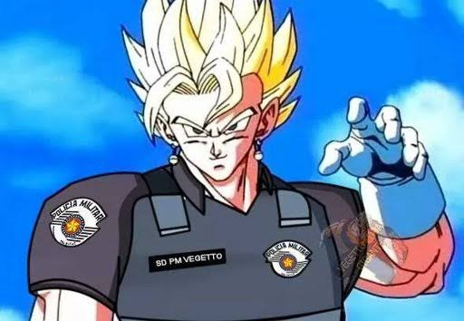

Sinto avisar amigo, mas isso não está pronto, não existe, ou eu estou com preguiça de fazer
Dependendo de como vc chegou aqui, obrigado por ter ido tão longe na página, ou por ter tentado ver algum ano do jogo que não existe ainda 💀
De qualquer forma, volte aqui em outro momento pq provavelmente vai ter coisa aq
Clique no botão nem um pouco óbvio pra voltar pro menu.